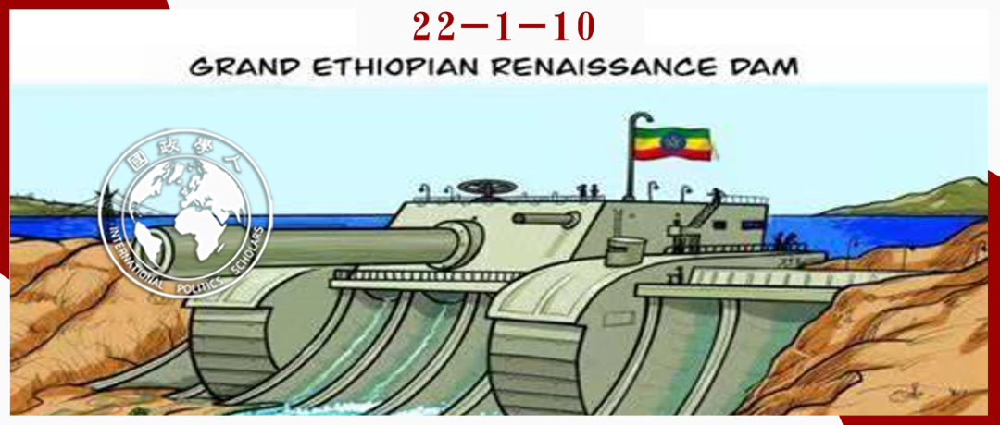
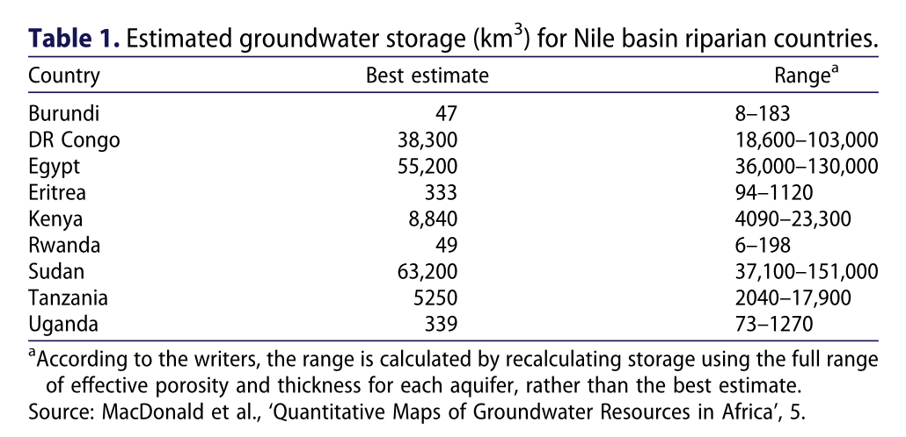

收录于合集 #《国际关系前沿》2022年第1期 23个

作品简介 ****
作者： 尤努斯·图尔汗（Yunus Turhan），土耳其国际关系讲师，毕业于安卡拉中东技术大学，曾于2017-2018年在牛津大学国际发展系担任客座研究员。研究方向为国家与非政府组织间关系、土耳其与非洲关系、发展研究以及和平与冲突研究。
编译： 杨影淇（国政学人编译员，南京大学国际关系研究院）
来源： Yunus Turhan, “The Hydro-political Dilemma in Africa Water Geopolitics: The Case of the Nile River Basin,” African Security Review , Vol. 30, No. 1, 2021, pp. 66-85. https://www.tandfonline.com/doi/full/10.1080/10246029.2020.1844775
归档： 《国际关系前沿》2022年第1期，总第40期。

导读
围绕尼罗河流域水资源冲突为何产生这一问题，作者基于约翰·加尔通的冲突三角理论认为尼罗河的水争端是流域国家目标相互冲突的结果，并且提出该流域各国紧张的政治关系、缺乏全面的尼罗河管理协定与各国的单边行动是造成它们目标互不相容的重要原因。然而，作者同时也认为国家的某些单边行动有可能改善当前的尼罗河流域对抗局势、奠定多边合作基础。如埃塞俄比亚复兴大坝就有利于平衡上下游权力关系并促进水资源的多领域合作，但其究竟是带来和平还是冲突仍然取决于各国怎样看待与处理这些导致冲突的根源。
由于埃及长期以来对尼罗河使用权利和话语权力的把控，水资源缺乏似乎成为了大多数人对尼罗河流域的第一印象。然而，作者在文章中厘清了水资源冲突的类型问题，并通过引用相关调查与科学研究证据证明了尼罗河水资源的非稀缺性。其将尼罗河流域水资源冲突定位为与管理相关的冲突不仅有利于纠正相关研究的起点，也进一步揭示了该冲突的实质性问题。
在分析导致尼罗河水资源冲突的原因方面，作者虽然基于历史脉络提出了三大主要因素，但仔细解读便可发现这三种因素的源头全部都指向政治僵局与政治互信的缺失。作者在对埃塞俄比亚复兴大坝未来发展方向的预测上也认为是流域国家看待矛盾的方式起到决定性作用。因此，流域国家信任度的缺乏才是导致尼罗河流域水政治困境的主要缘由，这不禁让人思考这种互信需要通过什么措施才能得到较好的改善。当前对于尼罗河流域而言，希望政治合作与技术合作并行不悖且相互促进的双轨路线正陷入困境，这证明单纯的利益分享难以继续为相互信任注入动力，而与此同时物质性权力与管理制度之间的矛盾正在加剧，流域的未来究竟是依仗权力的平衡还是制度的规范这一问题值得我们进一步探究。
摘要
**
**
与水相关的冲突可分为两大类：其一是与物质因素相关的冲突 ，如水资源短缺和欠发展； 其二是与管理因素相关的冲突 ，包括国家失败（state- failure）和缺乏治理。根据后一种冲突形式，文章考虑了在尼罗河流域导致冲突的三种潜在原因，即 利益相关者之间政治关系紧张、缺乏包容各方的尼罗河水管理协议以及各国的单边行动。 通过识别这些原因，本次研究关注于冲突解决的初始阶段，即诊断冲突的来源。文章基于约翰·加尔通（Johan Galtung）关于冲突动力学的理论方法，探讨了当前研究不足的两个领域，运用三个变量解释了尼罗河流域冲突的根源，同时反映了埃塞俄比亚复兴大坝（Grand Ethiopian Renaissance Dam）谈判过程的性质。这一过程具有分配性质（distributive），并提供了一种合作（双赢）的谈判形式，以巩固复兴大坝的地位并纠正当前的困境。
编译
01
导言
跨界水冲突自史前时代就出现了，由于水的性质，被水连接起来的各个团体随时准备着为争夺水资源而发生冲突甚至战争。而在现代国家关系中，水深远的政治和社会作用也已经凸显出来。在当今世界，水政治十分重要，它与共享水资源的冲突与合作都密切相关。由于冲突（conflict）与水（water）之间的关系引发了政治、军事、经济、外交以及从地方到全球等多个层面的关注，所以在这里必须阐明，就文章而言， 水冲突是指围绕尼罗河水在区域层面发生的政治冲突的非暴力部分 。
虽然通常是缺水和认为水资源有限的看法导致了冲突，但对水资源的治理和管理方法也同样是导致冲突的另一类主要原因。因此，学界主要将水资源冲突分为两类。 其一是与缺水或发展不足等物质因素有关的冲突 ，如发生在西非干旱的萨赫勒地区和南部非洲西南地区的若干冲突。 其二是与管理有关的冲突 ，他们通常发生在一些水资源丰富但缺乏管理条规的地区。如苏丹境内的冲突就与缺乏对水资源的管理有关，而水资源匮乏并不是导致冲突的主要原因。鉴于尼罗河案例存在与管理有关的冲突，本次研究通过三个变量阐明了当前尼罗河冲突的根源，即 紧张的政治局势（敌对行动）、沿岸国家之间缺乏包容各方的协议（历史上尼罗河水协议的有效性问题）以及单边行动 。这些是经常导致目标冲突（在加尔通的术语中称为“结构性暴力”）和增加青尼罗河与白尼罗河国家（分别包括埃塞俄比亚、苏丹和埃及）冲突发生率的重要因素。
基于这一背景，本次研究共包括五个部分。第一部分是研究的理论背景，包括对冲突解决理论的简要概念分析，以在分析结构内界定当前尼罗河流域水冲突的性质。第二部分简要概述了世界的水资源压力，并评估了尼罗河流域国家的地下水储量以及全大陆含水层的水量。这表明尼罗河水量充足，从而体现对水资源管理不足是尼罗河冲突的主要原因。第三部分涉及埃塞俄比亚、埃及和苏丹之间关于尼罗河的政治关系，以阐释有效关系缺乏并进而引发冲突性目标和分歧的问题。第四部分考察了以前关于尼罗河流域的协议。最严重的僵局出现在之前的条约中，这些条约在共享尼罗河方面给予了埃及和苏丹重要让步。最后一部分讨论了埃塞俄比亚在没有达成包容各方的协议时就建造复兴大坝的单边行动，认为这一做法使得尼罗河流域的冲突变成了兼具合作与冲突性形式的谈判。
02
理论框架：冲突分析
约翰·加尔通是和平研究领域的一位主要学者，他关于冲突动力学的理论方法主要包括三个方面： （A）冲突态度（B）冲突行为（C）矛盾 ，即冲突问题本身 。它们是冲突的核心组成部分，被称为冲突三角： 文化暴力（或冲突态度-A） 指一方对另一方的假定、认知和情感表现为优越感和自以为是，并且未能充分考虑其他各方的观点； 直接暴力（或冲突行为-B） 指在冲突中以言语侮辱、身体虐待或暴力行为形式出现的精神、言语或身体表达； 结构性暴力（或矛盾，即冲突问题本身-C） 指双方或多方之间的感知不相容或目标冲突。在这个三角中， 矛盾是导致暴力态度和行为冲突的核心问题 。而这一冲突三角的三个组成部分又会相互强化，从而形成恶性循环，维持且加剧了冲突。
对于尼罗河冲突而言，文章应用加尔通的冲突三角模型，针对利益相关者之间的事实分歧提出将结构性暴力（或矛盾，即冲突问题本身-C）作为分析尼罗河冲突根源框架的起点。由于埃塞俄比亚、苏丹和埃及的目标冲突在许多方面都十分明显，因此这种关系可以作为矛盾的代表，并驱动着它们之间的暴力态度和行为。
03
非洲缺水情况监测
各种定量研究证明， 包括尼罗河在内的非洲若干地区的争端并非源于缺水 。如根据水资源压力预测国家排行榜（Aqueduct Projected Water Stress Country Rankings），在针对2020年和2040年的水资源压力预测中，除北非（利比亚和摩洛哥）以及南部非洲外，其他非洲国家都未进入前30名。这意味着尼罗河流域国家在2040年的预测当中并不会面临严重的缺水问题。此外，最新研究也表明，非洲拥有丰富的地下水资源，而 包括尼罗河流域长期存在分歧的地区也拥有大量的地下水资源 （见表1）。

可见，尼罗河流域并不是水资源缺乏的地区，环境冲突分析中的缺水概念与尼罗河水以及埃塞俄比亚—苏丹—埃及的冲突导向关系没有经验联系。因此，应用与管理相关的冲突概念以及加尔通的冲突三角模型分析尼罗河流域更为恰当。从这一视角出发， 尼罗河争端是沿岸国家目标不相容的结果 。该模型认为，尼罗河本身对冲突各方而言并不重要，但各方都不希望他国能够掌控它并使本国能够最大化利用尼罗河。从这个意义上说，竞争各方主动或被动地阻挠有利的解决方案，因此矛盾在于沿岸各国的态度并推动它们的行为。
04
尼罗河沿岸国家之间的裂痕和政治僵局：埃塞俄比亚、埃及和苏丹
政治僵局是冲突的根源，它可以源于或导致某些态度。 同样，这种态度也将造成会产生冲突性目标的行为。因此，冲突各方需要采取各种方法缓解紧张的政治局势。在这方面，加尔通的模型呼吁通过各自后退一步、找出冲突的真正根源以及保持合作形式的谈判以纠正困境的方法促进国家之间双赢关系的达成。
历史证实，政治紧张局势会影响其他形式的关系。在青尼罗河的例子中，更广泛的动态政治背景和权力不对称贯穿埃及和埃塞俄比亚之间的政治关系，因为双方往往站在不同的阵营当中。从冷战时期两国与美苏的联盟互换，到1995年埃及总统穆巴拉克遇刺事件，两国的关系虽有缓和对话时期，但始终以相互对峙与互不信任为主要基调。尽管由于埃及的复兴政策，2015年以后两国的关系得到很大改善，但政治互信程度依旧较低。截至2020年7月，在埃塞俄比亚复兴大坝问题上的紧张局势仍继续主导着双边关系的范围和程度。
埃及和苏丹的政治关系也令人担忧，两国总是在一些导致冲突的关键问题上持不同立场。首先是苏丹的巴希尔政府从前一直被埃及视为企图颠覆本国政权的眼中钉。虽然巴希尔政府于2019年倒台，但由于苏丹在埃塞俄比亚复兴大坝问题上更加趋向于支持埃塞俄比亚的立场，因此预测苏丹和埃及的关系走向还为时尚早。其次是两国之间存在争议边界，哈拉伊卜地区（Halayib region）主权归属问题至今是挑动两国关系的重要因素。第三，两国对南苏丹冲突持有不同立场。喀土穆认为埃及支持达尔富尔地区的叛军，危害了苏丹的国家安全。第四是围绕埃塞俄比亚复兴大坝产生的问题。苏丹和埃及对该问题各持支持与抵制的态度，这加剧了两国关系的紧张程度，其政治关系依然十分不稳定。
与埃及和埃塞俄比亚的关系相比，苏丹和埃塞俄比亚之间的关系更具合作性。两国关系在20世纪90年代之前由于相互敌对的行动而困境重重，但在1991年《友谊与合作协定》（ Friendship and Cooperation Agreement ）签署之后，两国便建立了较为稳定的关系。近年来，虽然苏丹既支持又回避之前的冲突关系，但由于苏丹对埃塞俄比亚复兴大坝的认可，两国关系也有了一定的恢复余地。
05
关于尼罗河的协定：加强苏丹和埃及对尼罗河流域的单边权力
第二个使尼罗河流域分歧的关系部分永久化的冲突根源是缺乏包容各方的河流管理协议。 文章的这一部分对当前关于埃塞俄比亚复兴大坝争论的制度背景进行了历史分析。在运用加尔通模型时，需要解决在协议中真正反映了冲突性目标的制度背景问题。就该模型而言，沿岸国家在协议中的立场是基于其矛盾的结构性立场的反映，而这种矛盾也需要同时被解决。因此，在这一历史背景下，各国的态度应该根据它们之间紧张的政治局势和不相容的价值观来处理。
对尼罗河流域的不公平管理可以追溯到19世纪，自那时以来已经签署了近十项协议，但没有一项为“公平分享”确立了有效的解决方案。因此，这些条约协议通过对尼罗河流域的不对称分享加剧了冲突。埃及坚持“历史性使用”、“既定权利”和“无重大损害”政策，阻止达成包容各方的协议，其根源就在于这些历史概念。
在殖民时期，英国控制了尼罗河流域的大部分地区。由于埃及的棉花产业和债务，英国优先支持埃及，并企图通过代表其在尼罗河流域的其他殖民地参与协议来实现其目标。1959年，埃及和苏丹独立以后签署了一项关于利用尼罗河水的全面协议，并继续将其他沿岸国家排除在外，“既定权利”的概念被用来为埃及的自身利益服务。虽然这一协议再次确认了埃及和苏丹对尼罗河的主导地位，但根据国际法，它只能对签署国苏丹和埃及产生效力，并不能约束其他沿岸国家。而根据“白板原则”，殖民时期的协议对独立后的尼罗河国家也不具有约束力。
之后，一些倡议为尼罗河沿岸国家提供了合作的机会，其中1999年尼罗河流域倡议组织（Nile Basin Initiative）的成立是十个尼罗河流域国家采取的最具有战略意义的措施之一。该组织致力于分享尼罗河水以实现双赢，并最终建立包容各方的正式流域组织。然而，当前签约十国仍未在公平管理尼罗河水上达成全面妥协。2010年5月10日，卢旺达、埃塞俄比亚、乌干达和坦桑尼亚签署了《合作框架协议》（ Cooperative Framework Agreement ），这是一项尼罗河沿岸国家间的新合作协议。作为对四国签署行为的回应，埃及和苏丹冻结了它们在尼罗河流域倡议组织中的所有项目，这在财务和政治上阻碍了正在进行的流域合作活动。但苏丹在2012年又改变了立场，返回了该组织。
当前，尼罗河流域倡议组织正经历着财务和制度上的挫折，由于在尼罗河问题上还没有定下一个全面的法律框架，合作的机会也被错过了。上下游国家继续根据其利益偏好在尼罗河流域追求不同的议程。埃塞俄比亚单方面宣布修建复兴大坝”可以被解释为对埃及争夺尼罗河水使用权以及在谈判中坚持历史性权利的回应。
06
埃塞俄比亚复兴大坝：冲突的再现还是合作的开始？
导致尼罗河问题无法得到有效解决的原因是各国的单边行动，埃塞俄比亚复兴大坝就是一个显著的例子。 这表明埃塞俄比亚拒绝了之前为冲突各方提供战略对话与合作机会的协议。但从这个意义上讲，该项目也为埃塞俄比亚、苏丹和埃及三方关系带来了一个新的维度：埃塞俄比亚对自我权利的追求将纠正尼罗河流域共享中的历史性不公并加强其在河流上的行动能力，即使它将承担沉重的政治和财政成本。
埃塞俄比亚对复兴大坝的启动是多种变化发生的结果。从一开始，埃塞俄比亚就试图通过该流域的政府间合作框架实施一项联合执行计划。但全面的法律协议未能签署，埃及在2010年暂停了它在尼罗河流域倡议组织的成员国资格，该组织的投资项目也以失败告终，因此埃塞俄比亚决定在该倡议的框架外单方面行动。
如果复兴大坝建成，它将是非洲最大的水管理项目和水力发电站，埃塞俄比亚也把大坝视为满足其水电需求的一个重要战略项目。然而，该坝巨大的蓄水量也对埃及产生了重大影响，尤其是其仅为六年的蓄水期可能会对埃及的用水安全产生负面效应。
埃及对埃塞俄比亚复兴大坝的反应从最开始的强硬态度逐步转变为后来的温和应对。虽然2015年埃及、苏丹和埃塞俄比亚针对大坝签署了《原则宣言》（ Declaration of Principles ），三方谈判得以恢复并建立了合作机制，但围绕大坝的蓄水时长问题依然争论不断。简而言之，尼罗河沿岸国家之间的谈判断断续续，在言和与军事威胁之间摇摆不定。尽管三方在该问题上取得了一些重大进展，但尚未就蓄水期达成共识，也未就尼罗河水资源共享达成包容各方的协议。如果这样的情况持续下去，埃塞俄比亚的单边行动虽然不太可能导致暴力冲突，但也可能会恶化本已复杂的水资源关系。
07
结论与讨论
尼罗河影响着该地区各国的政治稳定和经济社会发展状况，流域各国的外交政策也与此息息相关。上游国家依赖流域法律框架的制定来补救自身欠缺的尼罗河使用权，并坚持用公平合理利用原则解决尼罗河冲突；下游国家则将自身利益置于优先地位，寻求不对其既有权利造成重大损害的谈判议程，而不是寻求促进整体问题解决的办法。显然，埃塞俄比亚复兴大坝的建设已经将谈判拉入了一个新的阶段，它反映了尼罗河流域不断变化的权力模式。 复兴大坝是带来合作还是冲突很大程度上取决于各官方当局将如何应对政治紧张局势、分配不公、水资源管理中缺乏利益分享以及事实分歧。 而这些也是尼罗河冲突的根源，它们阻碍了合作协议并导致了竞争关系。
目前埃塞俄比亚复兴大坝对尼罗河问题施加了压力，面对这一挑战三个国家采取了不同的做法。苏丹处于埃及和埃塞俄比亚之间，但倾向于与埃塞俄比亚联合实现收益。埃及虽然奉行保守主义并认为该大坝的风险大于收益，但也承认除了通过谈判来降低负面影响之外别无他法。因此， 埃塞俄比亚复兴大坝可能缓解对抗并带来合作的曙光 。然而， 流域各国之间缺乏互信也为谈判蒙上了阴影 ，因为关于复兴大坝的有利谈判并不能取代一个更加全面的、能解决内在问题的合作进程。 这一意味着除非所有利益相关者都采取合作的姿态，否则冲突性目标（结构性暴力）就难以被解决。
文章发现，埃及、埃塞俄比亚和苏丹之间存在不相容的价值观和目标（矛盾，即冲突问题本身-C），这源自三个与尼罗河问题具体相关的冲突来源： 第一，利益相关者之间的政治紧张局势加上水资源安全化导致了彼此的敌对行动。第二，缺乏包容各方的协定仍然阻碍了需要基于公平原则修订及重新谈判旧尼罗河协定的建设性解决办法。第三，流域国家的单边行动既有可能加剧现有冲突，也有可能成为区域一体化的推动力。
词汇整理
“既定权利” “established rights”
“无重大损害” “no significant harm”
白板原则 clean slate doctrine
责编 | 秦子宁 晋玉
排版 | 陆霜滢 陈炜昊
文章观点不代表本平台观点，本平台评译分享的文章均出于专业学习之用, 不以任何盈利为目的，内容主要呈现对原文的介绍，原文内容请通过各高校购买的数据库自行下载。

国政学人
支持学术公益与知识传播
微信扫一扫赞赏作者 __赞赏
已喜欢，对作者说句悄悄话
取消 __
发送给作者
发送
最多40字，当前共字
上一页 1/3 下一页
长按二维码向我转账
支持学术公益与知识传播
受苹果公司新规定影响，微信 iOS 版的赞赏功能被关闭，可通过二维码转账支持公众号。